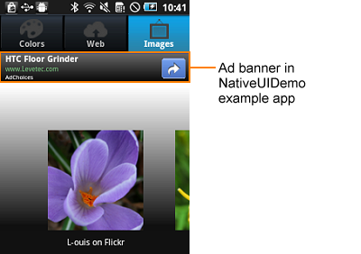

The MoSync Advertising C++ Library and Advertising C API make it easy for C/C++ programmer's to create advertisements and display them in mobile applications. You can get and set properties to determine if the advertisement should be visible in a certain context.
For a list of the platforms supported by the MoSync Advertising Library and API see our Feature/Platform Support page.
We make use of the NativeUI layouts to display advertisements. That means that the advertisment matches the look and feel of the target platform.
Here is a typical advertisement, in this case a banner ad, which we have implemented in the example application NativeUIDemo:

Take a look at the code of that example to see how we have implemented the advertisment feature.
To create a new banner on Android and test it during development, a publisher ID is required. You can get it by registering with Google AdMob.
For iOS no ID is required during development. When you add your application to the App Market you will need to provide information during the registration process.
At the C++ level we have created a simple library contains two classes:
The Advertising Library really makes developer’s life really easy: only three lines of code are needed to get a banner working inside your application:
Banner* banner = new Banner("yourPublisherID");
banner->requestContent(true);
aLayout->addBanner(banner);
In this example, on both iOS and Android, the advertisement will be created at the default banner size of 320 * 50 pixels. On Android you can specify other sizes for the advertisement in the constructor, including rectangular banner, IAB full banner and leaderboard sizes.
For full details of the Advertising Library classes and methods, see the MoSync API Reference.
The Advertising Library makes use of the set of C functions in the Advertising API:
Ad banner properties that can be got/set include:
For full details of the Advertising API functions and properties, see the MoSync API Reference.